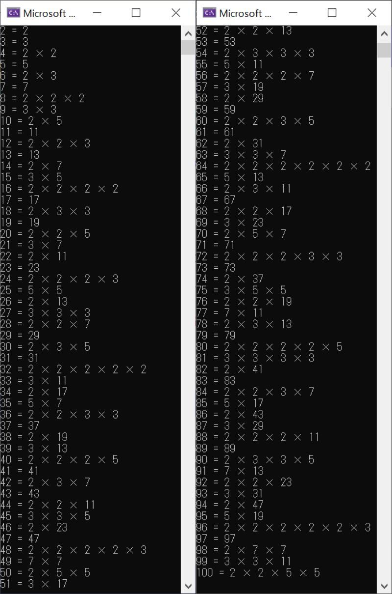
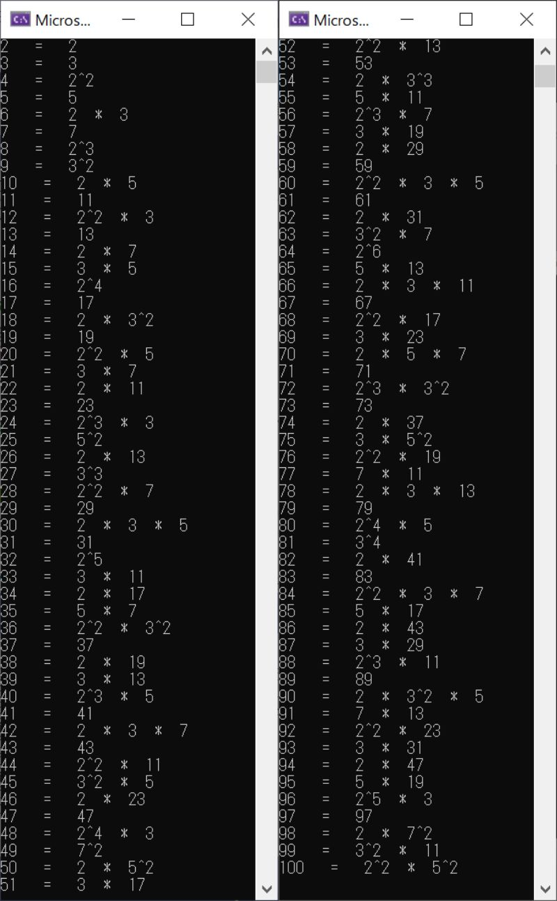

メモ：C アルゴリズム 素因数分解
素因数分解
を求めるという課題があったが、自分のコードと回答例を比較してアルゴリズムスキル向上のために記録として残す
自分のコード
test.c
素数の判定とかは独立させなくてもできるよう
test2.c 回答例を基に修正
一番勉強になったのは、for文の条件式は、結構自由にしちゃっていいよう
ついでと言うか、そのまま真似じゃ癪なのでちゃんとべき乗で表示するようにまでしてみた
test.c の実行結果

test2.c の実行結果

素因数分解って他にもやり方があるみたいで、いつかもっと調べてみたい
参考になったサイト
素因数分解のやり方を分かりやすく解説！計算問題も付いてます
べき乗とは何か。ゼロ乗・マイナス乗・分数乗・無理数乗ってどういう意味？
戻る